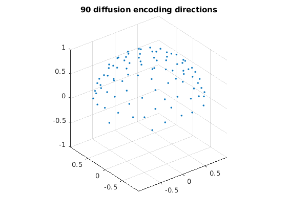

Contents
introduction
% s_SDnDTI_designBvec4AcquiredData.m % % A script for selecting diffusion encoding directions for SDnDTI from % acquired data with given diffusion encoding directions (e.g., 30 out of % 90 directions). % % Source code: % https://github.com/qiyuantian/SDnDTI/blob/main/s_SDnDTI_designBvec4AcquiredData.m % % HTML file can be automatically generaged using command: % publish('s_SDnDTI_designBvec4AcquiredData.m', 'html'); % % Reference: % [1] Tian Q, Li Z, Fan Q, Polimeni JR, Bilgic B, Salat DH, Huang SY. % SDnDTI: Self-supervised deep learning-based denoising for diffusion % tensor MRI. NeuroImage, 2022; 253: 119033. % % (c) Qiyuan Tian, Harvard, 2022
load bvecs from Human Connectome Project
clear, clc, close all bvals_all = dlmread('hcp_bval.txt'); % all bvals bvecs_all = dlmread('hcp_bvec.txt'); % all bvecs bvals_all = round(bvals_all / 100) * 100; disp(unique(bvals_all)); dirs = bvecs_all(bvals_all > 100 & bvals_all < 1500, :); % only use bvecs for b=1000 dirs_vis = dirs .* sign(dirs(:, 3)); % directions flipped to z > 0 for visualization figure; % display diffusion encoding directions, all flipped to z > 0 plot3(dirs_vis(:, 1), dirs_vis(:, 2), dirs_vis(:, 3), '.'); grid on, axis equal zlim([-1, 1]) title('90 diffusion encoding directions');
0
1000
2000
3000
 select all sets of 6 encoding directions optimal for tensor fitting
% 6 optimized directions from the DSM scheme that minimizes the condition % number of the diffusion tensor transformation matrix % from S Skare et al., J Magn Reson. 2000;147(2):340-52 % 10, 20, 30 (dsm10.m, dsm20.m, dsm30.m) or more directions should be used for % very noisy data dsm6 = [0.91, 0.416, 0; ... 0, 0.91, 0.416; ... 0.416, 0, 0.91; ... 0.91, -0.416, 0; ... 0, 0.91, -0.416; ... -0.416, 0, 0.91]; dsm6_norm = dsm6 ./ sqrt(dsm6(:, 1) .^ 2 + dsm6(:, 2) .^ 2 + dsm6(:, 3) .^ 2); % normalize vectors % randomly rotate the DSM6 dirs, select their nearest 6 dirs from acquired % dirs, keep those with low condition number % selected dirs are not perfectly DSM6 dirs, so condition number might be % large, which is not optimal for tensor fitting and amplifies noise, which % is especially a problem for a small number of encoding directions (e.g., % lower than 60) rotang_all = []; condnum_all = []; ind_all = []; for ii = 1 : 100000 % number of iterations can be increased rotangs = rand(1, 3) * 2 * pi; % random angles to rotate around x, y, z axis R = rot3d(rotangs); % rotation matrix dsm6_rot = (R * dsm6_norm')'; % roated directions % find 6 nearest dirs in acquired dirs angerrors = acosd(abs(dsm6_rot * dirs')); % angles btw rotated DSM6 dirs and acquired dirs [minerrors, ind] = min(angerrors, [], 2); % 6 dirs with min angles compared to rotated DSM6 dirs condnum = cond(amatrix(dirs(ind, :))); % cond number of tensor tx matrix of selected dirs % only use dirs with low cond number if condnum < 1.6 % threshold should be determined based on given data, 1.6 is good in our experience if isempty(ind_all) || ~any(sum(ind_all == sort(ind'), 2) == 6) % make sure no repetition % record params for satisfied sets condnum_all = cat(1, condnum_all, condnum); ind_all = cat(1, ind_all, sort(ind')); rotang_all = cat(1, rotang_all, rotangs); end end end disp(size(ind_all, 1)) for ii = 1 : 2 figure; % display two selected sets of 6 optimal directions plot3(dirs_vis(:, 1), dirs_vis(:, 2), dirs_vis(:, 3), '.'); % all dirs hold on visdirs_use = dirs_vis(ind_all(ii, :), :); plot3(visdirs_use(:, 1), visdirs_use(:, 2), visdirs_use(:, 3), 'o'); % selected dirs R = rot3d(rotang_all(ii, :)); dsm6_rot = (R * dsm6_norm')'; dsm6_rot_vis = dsm6_rot .* sign(dsm6_rot(:, 3)); plot3(dsm6_rot_vis(:, 1), dsm6_rot_vis(:, 2), dsm6_rot_vis(:, 3), 'x'); % rotated DSM6 dirs grid on, axis equal xlim([-1, 1]) ylim([-1, 1]) zlim([-1, 1]) title(['cond num=' num2str(condnum_all(ii))]); end
21
select N sets out of all selected sets of 6 dirs
% directions from all sets are uniformly distributed on z>0 hemisphere % (since v and -v are identical for diffusion encoding) to maximize angular % coverage as well as on whole sphere N = 3; % select 3 sets as an example, so in total of 3x6=18 dirs bvecs_hemi = []; % designed diffusion encoding directions unif_min = 10^10; % init using a large number ind_min = []; for ii = 1 : 100000 % number of iterations can be increased for better results r = randperm(size(ind_all, 1), N); ind = ind_all(r, :); dirs_all = dirs(ind(:), :); % all 30 directions % [v; -v] is used for optimization such that v is uniformly distributed % on z>0 hemisphere dirs_tmp = [dirs_all; -dirs_all]; % uniformly distributed directions have lowest electrostatic potential energy % details see Jones Magn. Reson. Med., 51 (2004), pp. 807-815 unif = potentialenergy(dirs_tmp); % uniformity of all 30 directions if unif < unif_min % keep new directions if uniformity is better unif_min = unif; bvecs_hemi = dirs_all; ind_min = ind; disp(unif_min) end end n = size(bvecs_hemi, 1) / N; figure for ii = 1 : N idxs = (ii - 1) * n + 1; idxe = ii * n; bvecs_vis = bvecs_hemi(idxs:idxe, :); tmp = sign(bvecs_vis(:, 3)); tmp(tmp == 0) = 1; bvecs_vis = bvecs_vis .* tmp; % flip dirs with z<0 to z>0 plot3(bvecs_vis(:, 1), bvecs_vis(:, 2), bvecs_vis(:, 3), '.'); % each color represents a set hold on end grid on, axis equal xlim([-1, 1]) ylim([-1, 1]) zlim([-1, 1]) title('bvecs are uniform on both hemi and whole sphere'); figure for ii = 1 : N idxs = (ii - 1) * n + 1; idxe = ii * n; bvecs_vis = bvecs_hemi(idxs:idxe, :); tmp = sign(bvecs_vis(:, 3)); tmp(tmp == 0) = 1; bvecs_vis = bvecs_vis .* tmp; % flip dirs with z<0 to z>0 plot3(bvecs_vis(:, 1), bvecs_vis(:, 2), bvecs_vis(:, 3), 'o'); % each color represents a set hold on end plot3(dirs_vis(:, 1), dirs_vis(:, 2), dirs_vis(:, 3), 'k.'); grid on, axis equal xlim([-1, 1]) ylim([-1, 1]) zlim([-1, 1]) title('selected directions out of all directions');
1.0061e+03 996.6677 995.7374 995.0967 993.7528 989.3878
DeepDTI pipeline
% subsequent data preparation and CNN training and application follows DeepDTI % see codes here: https://github.com/qiyuantian/DeepDTI % diffusion weighted images (DWIs) from each set, which are optimal for % diffusion tensor fitting, serve as input for CNNs % DWIs from all sets serve as target of CNNs